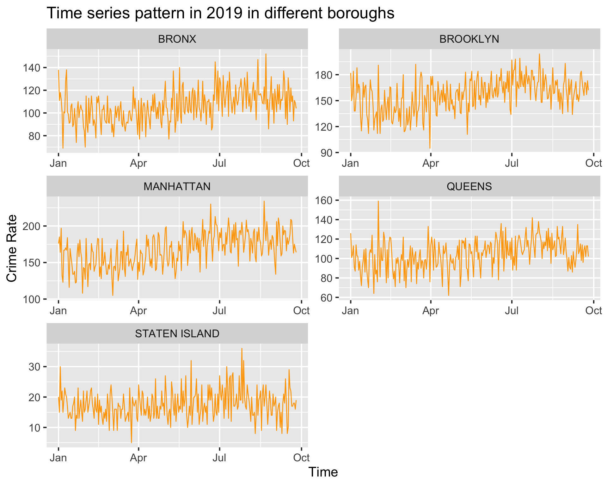
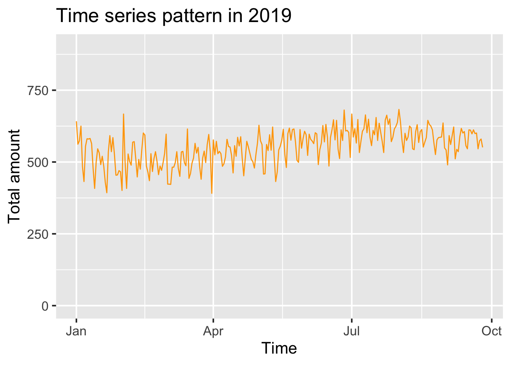

Chapter 6 Time series
We want to figure out if there is special time in the year where more crimes happen. So we build the following graph for recognizing time series patterns.
df2 <- data.frame(df_select[,1:2])
df2['count'] <- 1
df2<- df2 %>%
group_by(CMPLNT_FR_DT) %>%
summarize(Freq = sum(count))
df2 <- df2 %>%
filter(CMPLNT_FR_DT >=as.Date('2019-01-01') & CMPLNT_FR_DT <=as.Date('2019-9-25'))
ggplot(df2, aes(as.Date(CMPLNT_FR_DT), y = Freq)) +
geom_line(color="orange")+
ylim(0, 900) +
labs(x = "Time", y = "Total amount", title = "Time series pattern in 2019")
As shown in the graph, more crimes happened in the early Janaury and summer in 2019. Early Jauaury, especially during the new year celebration time, since more people went out for celebration, the raise of crime amount is reasonable. Besides, summer time is another period for more crimes. It may due to the relation between weather and people’s moods.
Since this research is aimed to find the suitable and safe region for university students to live, we want to see the time series pattern in each borough.
df2 <- data.frame(df_select[,1:2])
df2['count'] <- 1
df2 <-df2[!is.na(df2$BORO_NM), ]
df2<- df2 %>%
group_by(BORO_NM,CMPLNT_FR_DT) %>%
summarize(Freq = sum(count))
df2 <- df2 %>%
filter(CMPLNT_FR_DT >=as.Date('2019-01-01') & CMPLNT_FR_DT <=as.Date('2019-9-25'))
df2["adjusted"] <- 0
df3 <- data.frame(df2)
DA <- data.frame(DATA2)
DA$Population <-as.numeric((gsub("\\,", "", DA$Population)))
for(i in 1:1340){
states <- df3[i,1]
df3[i,'adjusted']<-100000*df3[i,3]/DA[states,"Population"]
}
ggplot(df3, aes(as.Date(CMPLNT_FR_DT), y = Freq)) +
geom_line(color="orange") +
facet_wrap(~BORO_NM, scales="free",ncol = 2)+
labs(x = "Time", y = "Crime Rate", title = "Time series pattern in 2019 in different boroughs")
Among 5 boroughs, There are small decline trends after August in all Boroughs except Manhattan which means the crime rate for all Boroughs except Manhattan may continued to decline after September. Since many lease periods begin around September, Queens may be a better choice to living than Manhattan from the plots above.
picked_time <- c("07am - 11am", "11am - 3pm", "3pm - 7pm","7pm - 11pm")
crime_color <- c("#7851a9", "#800020", "#ef5927", "#0079c1", "#dac751", "#133a30")
df_select <- df_select %>% drop_na(BORO_NM)
df_select <- df_select %>% mutate(timerange = CMPLNT_FR_TM)
df_select <- df_select %>% mutate(timerange = ifelse(CMPLNT_FR_TM >= chron(times="07:00:00")
& CMPLNT_FR_TM <= chron(times="10:59:59"),
"07am - 11am", timerange) )
df_select <- df_select %>% mutate(timerange = ifelse(CMPLNT_FR_TM >= chron(times="11:00:00")
& CMPLNT_FR_TM <= chron(times="14:59:59"),
"11am - 3pm", timerange) )
df_select <- df_select %>% mutate(timerange = ifelse(CMPLNT_FR_TM >= chron(times="15:00:00")
& CMPLNT_FR_TM <= chron(times="18:59:59"),
"3pm - 7pm", timerange) )
df_select <- df_select %>% mutate(timerange = ifelse(CMPLNT_FR_TM >= chron(times="19:00:00")
& CMPLNT_FR_TM <= chron(times="23:00:00"),
"7pm - 11pm", timerange) )
#df_select <- df_select %>% mutate(color = timerange)
#df_select <- df_select %>% mutate( color = ifelse(timerange == picked_time[1], "red", color) )
#df_select <- df_select %>% mutate( color = ifelse(timerange == picked_time[2], "green", color) )
#df_select <- df_select %>% mutate( color = ifelse(timerange == picked_time[3], "blue", color) )
#df_select <- df_select %>% mutate(crimecolor = OFNS_DESC)
#for(i in 1:length(dangerous)){
#df_select <- df_select %>% mutate( crimecolor = ifelse(OFNS_DESC == dangerous[i], crime_color[i], crimecolor) )
#}
df_select <- df_select %>% mutate(timerange = ifelse(timerange %in% picked_time, timerange, NA)) %>% drop_na(timerange)As a student, we rent an apartment because we need to go to school or work. So it is very important to avoid the places that have a higher chance of crime when we are walking to school, or coming back to home. Therefore, we have broken down the time periods that the crime happened into the ranges that we care most about, which are as following:
- 7am - 11am (the time when we go to school or work)
- 3pm - 7pm (the time we go back to home )
- 7pm - 11pm (the time we go back to home when we have night class)
ggplot(df_select, aes(x=BORO_NM, ..count.., fill=timerange)) +
geom_bar(position="dodge")+
xlab("")+
ylab("Number of Crimes")+
theme(legend.title = element_blank())
#scale_fill_manual(values=c("tomato2", "deepskyblue", "slateblue4",'yellow1'))From the graph above, there is same pattern for every borough. The desceding order of numebr of crimes is 3pm -7pm, 11am - 3pm, 7pm - 11pm, and 07am - 11am. Seperating the time period doesn’t help us figure out which borough has apprant advantage to live. However we can adjust our schdule base on the graph above. For example, if you live in Manhattan, going out before 11am and back to home after 7pm can help you avoid more crimes.
library(chron)
library(ggplot2)
ggplot(df_select, aes(factor(weekdays(CMPLNT_FR_DT,abbreviate =TRUE), levels=c("Mon", "Tue", "Wed", "Thu", "Fri", "Sat", "Sun"))))+
geom_bar(fill="lightblue")+
xlab("Weekdays and Weekends")+
ggtitle("The Number of Crime Events in Weekdays by Borough in New York City")+
facet_wrap("BORO_NM",scale="free")
Based on the above plot, the weekdays pattern is similar for each borough, where in the weekends the occurance of crime events is relatively infrequent compare to weekdays. Since we will go outside more during weekdays, the graph above dones’t help us find out the most suitable borough. However, the graph reminder us that we should try to choose safer periods to go outside in Friday.